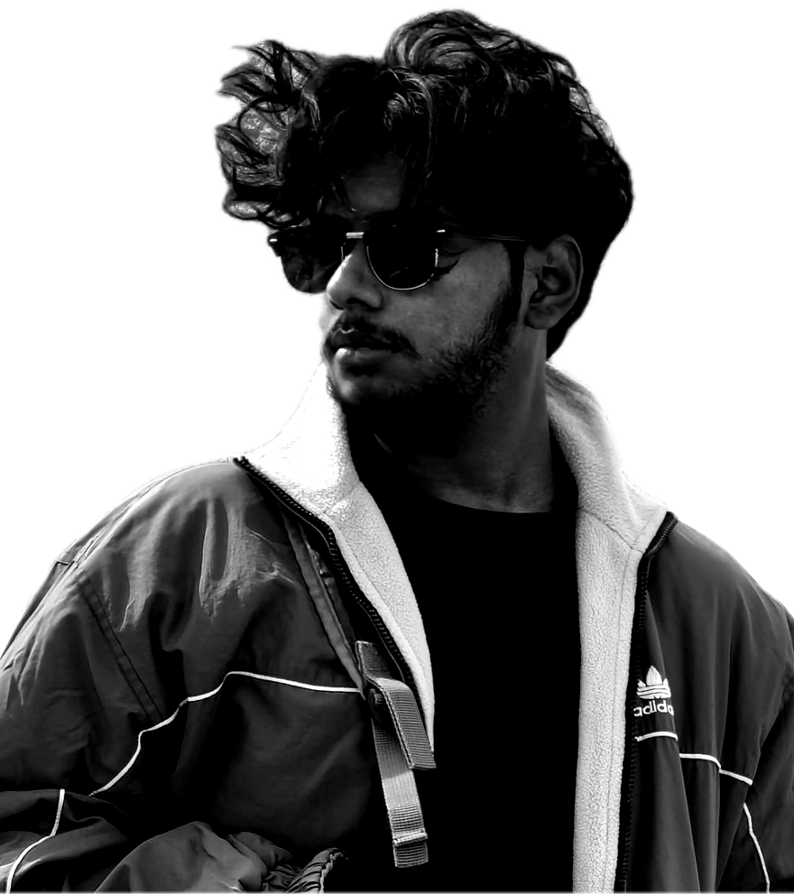

Photographer, editor, director from India. I never stop experimenting.

Hey, I'm Jatin Photographer, editor, director from India, and I never stop experimenting. I'd rather burn out chasing what I love than fade away doing what I don't.
I pick the colours, the light, the type, the mood. Then I break it all and try again until it feels like mine.
For commissions and collabs. Tell me what you want to make: